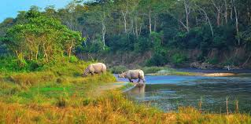

Chitwan National Park
Chitwan National Park: A Famous and Protected Tourism Area of Nepal
 Chitwan National Park(Nepali: चितवन राष्ट्रिय निकुञ्ज) is the first national park in Nepal. It was established in 1973 and granted the status of a World Heritage Site in 1984. It covers an area of 952.63 km2 (367.81 sq mi) and is located in the subtropical Inner Terai lowlands of south-central Nepal in the districts of Nawalpur, Parsa, Chitwan and Makwanpur. In altitude it ranges from about 100 m (330 ft) in the river valleys to 815 m (2,674 ft) in the Churia Hills.[1] In the north and west of the protected area the Narayani-Rapti river system forms a natural boundary to human settlements. Adjacent to the east of Chitwan National Park is Parsa National Park, contiguous in the south is the Indian Tiger Reserve Valmiki National Park. The coherent protected area of 2,075 km2 (801 sq mi) represents the Tiger Conservation Unit (TCU) Chitwan-Parsa-Valmiki, which covers a 3,549 km2 (1,370 sq mi) huge block of alluvial grasslands and subtropical moist deciduous forests.[2]
Contents
History
 In 1950, Chitwan's forest and grasslands extended over more than 2,600 km2 (1,000 sq mi) and was home to about 800 rhinos. When poor farmers from the mid-hills moved to the Chitwan Valley in search of arable land, the area was subsequently opened for settlement, and poaching of wildlife became rampant. In 1957, the country's first conservation law inured to the protection of rhinos and their habitat. In 1959, Edward Pritchard Gee undertook a survey of the area, recommended creation of a protected area north of the Rapti River and of a wildlife sanctuary south of the river for a trial period of ten years.[4] After his subsequent survey of Chitwan in 1963, this time for both the Fauna Preservation Society and the International Union for Conservation of Nature, he recommended extension of the sanctuary to the south.[5]
In 1950, Chitwan's forest and grasslands extended over more than 2,600 km2 (1,000 sq mi) and was home to about 800 rhinos. When poor farmers from the mid-hills moved to the Chitwan Valley in search of arable land, the area was subsequently opened for settlement, and poaching of wildlife became rampant. In 1957, the country's first conservation law inured to the protection of rhinos and their habitat. In 1959, Edward Pritchard Gee undertook a survey of the area, recommended creation of a protected area north of the Rapti River and of a wildlife sanctuary south of the river for a trial period of ten years.[4] After his subsequent survey of Chitwan in 1963, this time for both the Fauna Preservation Society and the International Union for Conservation of Nature, he recommended extension of the sanctuary to the south.[5]
By the end of the 1960s, 70% of Chitwan's jungles had been cleared, malaria eradicated using DDT, thousands of people had settled there, and only 95 rhinos remained. The dramatic decline of the rhino population and the extent of poaching prompted the government to institute the Gaida Gasti – a rhino reconnaissance patrol of 130 armed men and a network of guard posts all over Chitwan. To prevent the extinction of rhinos the Chitwan National Park was gazetted in December 1970, with borders delineated the following year and established in 1973, initially encompassing an area of 544 km2 (210 sq mi).[6]
Climate
Chitwan has a tropical monsoon climate with high humidity all through the year.[3] The area is located in the central climatic zone of the Himalayas, where monsoon starts in mid June and eases off in late September. During these 14–15 weeks most of the 2,500 mm yearly precipitation falls – it is pouring with rain. After mid-October the monsoon clouds have retreated, humidity drops off, and the top daily temperature gradually subsides from ±36 °C / 96.8 °F to ±18 °C / 64.5 °F. Nights cool down to 5 °C / 41.0 °F until late December, when it usually rains softly for a few days. Then temperatures start rising gradually.
Vegetation
Seed of kapok, the silk cotton tree  The typical vegetation of the Inner Terai is Himalayan subtropical broadleaf forests with predominantly sal trees covering about 70% of the national park area. The purest stands of sal occur on well drained lowland ground in the centre. Along the southern face of the Churia Hills sal is interspersed with chir pine (Pinus roxburghii). On northern slopes sal associates with smaller flowering tree and shrub species such as beleric (Terminalia bellirica), rosewood (Dalbergia sissoo), axlewood (Anogeissus latifolia), elephant apple (Dillenia indica), grey downy balsam (Garuga pinnata) and creepers such as Bauhinia vahlii and Spatholobus parviflorus.
The typical vegetation of the Inner Terai is Himalayan subtropical broadleaf forests with predominantly sal trees covering about 70% of the national park area. The purest stands of sal occur on well drained lowland ground in the centre. Along the southern face of the Churia Hills sal is interspersed with chir pine (Pinus roxburghii). On northern slopes sal associates with smaller flowering tree and shrub species such as beleric (Terminalia bellirica), rosewood (Dalbergia sissoo), axlewood (Anogeissus latifolia), elephant apple (Dillenia indica), grey downy balsam (Garuga pinnata) and creepers such as Bauhinia vahlii and Spatholobus parviflorus.
Seasonal bushfires, flooding and erosion evoke an ever-changing mosaic of riverine forest and grasslands along the river banks. On recently deposited alluvium and in lowland areas groups of catechu (Acacia catechu) with rosewood (Dalbergia sissoo) predominate, followed by groups of kapok (Bombax ceiba) with rhino apple trees (Trewia nudiflora), the fruits of which rhinos savour so much.[7] Understorey shrubs of velvety beautyberry (Callicarpa macrophylla), hill glory bower (Clerodendrum sp.) and gooseberry (Phyllanthus emblica) offer shelter and lair to a wide variety of species.
Terai-Duar savanna and grasslands cover about 20% of the park's area. More than 50 species are found here including some of the world's tallest grasses like the elephant grass called Saccharum ravennae, giant cane (Arundo donax), khagra reed (Phragmites karka) and several species of true grasses. Kans grass (Saccharum spontaneum) is one of the first grasses to colonise new sandbanks and to be washed away by the yearly monsoon floods.[8]
Funna
Basking mugger crocodile The wide range of vegetation types in the Chitwan National Park is haunt of more than 700 species of wildlife and a not yet fully surveyed number of butterfly, moth and insect species. Apart from king cobra and rock python, 17 other species of snakes, starred tortoise and monitor lizards occur. The Narayani-Rapti river system, their small tributaries and myriads of oxbow lakes is habitat for 113 recorded species of fish and mugger crocodiles. In the early 1950s, about 235 gharials occurred in the Narayani River. The population has dramatically declined to only 38 wild gharials in 2003. Every year gharial eggs are collected along the rivers to be hatched in the breeding center of the Gharial Conservation Project, where animals are reared to an age of 6–9 years. Every year young gharials are reintroduced into the Narayani-Rapti river system, of which sadly only very few survive.[9]
Mammals
Two Bengal tigers swimming in the park
Greater One-horned Rhinoceros in the national park Chitwan National Park is home to 68 mammal species.[10] The "king of the jungle" is the Bengal tiger. The alluvial floodplain habitat of the Terai is one of the best tiger habitats anywhere in the world. Since the establishment of Chitwan National Park the initially small population of about 25 individuals increased to 70–110 in 1980. In some years this population has declined due to poaching and floods. In a long-term study carried out from 1995–2002 tiger researchers identified a relative abundance of 82 breeding tigers and a density of 6 females per 100 km2 (39 sq mi).[11] Information obtained from camera traps in 2010 and 2011 indicated that tiger density ranged between 4.44 and 6.35 individuals per 100 km2 (39 sq mi). They offset their temporal activity patterns to be much less active during the day when human activity peaked.[12]
Leopards are most prevalent on the peripheries of the park. They co-exist with tigers, but being socially subordinate are not common in prime tiger habitat.[13] In 1988, a clouded leopard was captured and radio-collared outside the protected area. It was released into the park, but did not stay there.[14]
Birds
White-throated kingfisher 
Male paradise flycatcher Every year dedicated bird watchers and conservationists survey bird species occurring all over the country. In 2006 they recorded 543 species in the Chitwan National Park, much more than in any other protected area in Nepal and about two-thirds of Nepal's globally threatened species. Additionally, 20 black-chinned yuhina, a pair of Gould's sunbird, a pair of blossom-headed parakeet and one slaty-breasted rail, an uncommon winter visitor, were sighted in spring 2008.[19]
Especially the park's alluvial grasslands are important habitats for the critically endangered Bengal florican, the vulnerable lesser adjutant, grey-crowned prinia, swamp francolin and several species of grass warblers. In 2005 more than 200 slender-billed babblers were sighted in three different grassland types.[20] The near threatened Oriental darter is a resident breeder around the many lakes, where egrets, bitterns, storks and kingfishers also abound. The park is one of the few known breeding sites of the globally threatened spotted eagle. Peafowl and jungle fowl scratch their living on the forest floor.
Apart from the resident birds about 160 migrating and vagrant species arrive in Chitwan in autumn from northern latitudes to spend the winter here, among them the greater spotted eagle, eastern imperial eagle and Pallas's fish-eagle. Common sightings include brahminy ducks and goosanders. Large flocks of bar-headed geese just rest for a few days in February on their way north.
As soon as the winter visitors have left in spring, the summer visitors arrive from southern latitudes. The calls of cuckoos herald the start of spring. The colourful Bengal pittas and several sunbird species are common breeding visitors during monsoon. Among the many flycatcher species the paradise flycatcher with his long undulating tail in flight is a spectacular sight.

Top Of The Page
Class Example Week 03
Text File Used for this Page
Assignment-I Submitted
Back to Index